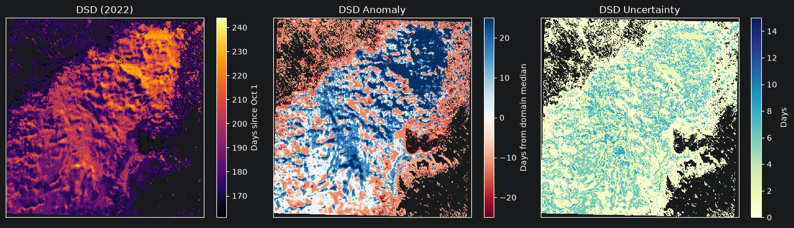
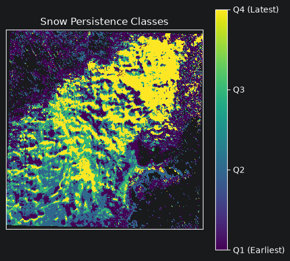
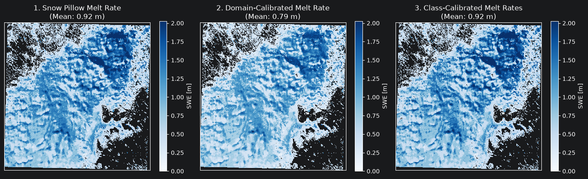
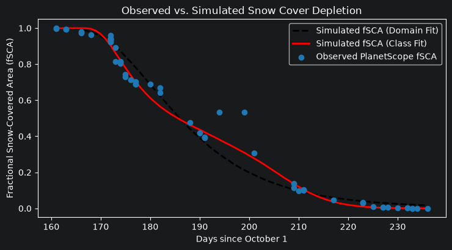

Snow Disappearance and SWE Reconstruction¶
This example notebook walks through calculating the Date of Snow Disappearance (DSD) from predicted snow-covered area (SCA) rasters and using those snow disappearance dates to estimate spring Snow Water Equivalent (SWE).
We assume you have already generated binary snow cover (*SCA.tif) images for your study area (see the Search and Download and Quick Start notebooks for how to download PlanetScope scenes and predict SCA).
[1]:
import os
import matplotlib.pyplot as plt
import numpy as np
import planetsca as ps
/Users/eddy/Documents/Programming/DS Hydro/planetsca/.venv/lib/python3.12/site-packages/tqdm/auto.py:21: TqdmWarning: IProgress not found. Please update jupyter and ipywidgets. See https://ipywidgets.readthedocs.io/en/stable/user_install.html
from .autonotebook import tqdm as notebook_tqdm
1. Calculate Date of Snow Disappearance (DSD)¶
First, point data_direc to the folder containing your <YYYYMMDD>*SCA.tif files and list the water years you want to process. You can run this over a single melt season or across multiple years.
The starting_array parameter lets you specify the index of the first image near peak snowpack for each year so that early-winter snow events before the main spring melt season are skipped (use 0 to start from the first available image).
[2]:
# directory containing your predicted *SCA.tif rasters
data_direc = "./example_images/SCA/"
# water years to process (can be one or multiple years, e.g. [2020, 2021, 2022])
years = [2022]
# target water year to save the stacked snow cover cube for SWE reconstruction
year_select = 2022
# index of the first image near peak snow accumulation for each year in `years`
starting_array = [7]
Now run ps.post_process.process_DSD to stack the snow cover maps, fill missing pixels, filter out brief single-date snow fluctuations, and compute the snow disappearance date (in days since October 1), domain-median DSD anomaly, and observation uncertainty for each pixel:
[3]:
dsd_saver, dsd_anomaly_saver, dsd_uncertain_saver = ps.post_process.process_DSD(
years=years,
data_direc=data_direc,
starting_array=starting_array,
year_select=year_select,
)
Visualize the resulting DSD, DSD anomaly, and DSD uncertainty maps for our target year:
[4]:
year_idx = years.index(year_select)
dsd = dsd_saver[year_idx]
dsd_anomaly = dsd_anomaly_saver[year_idx]
dsd_uncertainty = dsd_uncertain_saver[year_idx]
fig, [ax1, ax2, ax3] = plt.subplots(
nrows=1, ncols=3, figsize=(14, 4), tight_layout=True
)
im1 = ax1.imshow(dsd, cmap="inferno", interpolation="none")
ax1.set_title(f"DSD ({year_select})")
plt.colorbar(im1, ax=ax1, label="Days since Oct 1")
im2 = ax2.imshow(dsd_anomaly, cmap="RdBu", vmin=-25, vmax=25, interpolation="none")
ax2.set_title("DSD Anomaly")
plt.colorbar(im2, ax=ax2, label="Days from domain median")
im3 = ax3.imshow(dsd_uncertainty, cmap="YlGnBu", vmin=0, vmax=15, interpolation="none")
ax3.set_title("DSD Uncertainty")
plt.colorbar(im3, ax=ax3, label="Days")
for ax in [ax1, ax2, ax3]:
ax.set_xticks([])
ax.set_yticks([])

2. Classify Snow Persistence Zones¶
Across mountain basins, wind drifting, aspect, and shading create repeatable spatial patterns in snow melt-out timing. Using ps.post_process.process_SnowClass, we can group the study area into four equal-area quartiles based on the average DSD anomaly (0 = earliest melt-out to 3 = latest melt-out).
[5]:
snow_classes = ps.post_process.process_SnowClass(dsd_anomaly_saver)
[-11. 0. 15.]
[6]:
fig, ax = plt.subplots(figsize=(5, 4.5), tight_layout=True)
im = ax.imshow(snow_classes, cmap="viridis", vmin=0, vmax=3, interpolation="none")
cbar = plt.colorbar(im, ax=ax, ticks=[0, 1, 2, 3])
cbar.ax.set_yticklabels(["Q1 (Earliest)", "Q2", "Q3", "Q4 (Latest)"])
ax.set_title("Snow Persistence Classes")
ax.set_xticks([])
ax.set_yticks([])
[6]:
[]

3. Compute Fractional Snow-Covered Area (fSCA) and Set Up Forcing Data¶
When year_select is provided, process_DSD saves the quality-controlled snow cover stack (DSD_stacked.npy) and observation dates (DSD_daydiff.npy) in processed_<year_select>/. We can pass these to ps.reconstruct_swe.process_fSCA to compute the domain-wide fSCA time series and define the active melt fitting window.
[7]:
processed_dir = os.path.join(data_direc, f"processed_{year_select}")
dsd_cube = np.load(os.path.join(processed_dir, "DSD_stacked.npy"))
daydiff = np.load(os.path.join(processed_dir, "DSD_daydiff.npy"))
(
fsca,
idx_start,
idx_end,
daydiff_filt,
fsca_filt,
dsd_cube_filt,
dsd_filt,
) = ps.reconstruct_swe.process_fSCA(dsd_cube.copy(), daydiff, snow_classes, dsd)
To convert snow disappearance dates into SWE, we need two meteorological inputs from a nearby weather station, snow pillow (e.g., SNOTEL or CDEC), or gridded reanalysis product for our study area:
dailySW: A 1D array of daily mean incoming shortwave radiation (\(\text{W/m}^2\)) for each day of the water year starting October 1.MF: A two-element array[melt_factor, intercept]from a linear fit of cumulative snowmelt (m of SWE) against cumulative shortwave radiation (\(\text{W/m}^2 \cdot \text{day}\)) at a reference snow pillow during the melt season.
[8]:
# Day of water year (0 = Oct 1, 364 = Sep 30)
wy_days = np.arange(365)
# Example daily incoming shortwave radiation (W/m^2) for the water year.
# Replace this with your local station or reanalysis shortwave series:
# dailySW = pd.read_csv('my_station_sw.csv')['sw_wm2'].to_numpy()
dailySW = 120.0 + 220.0 * np.clip(np.sin(np.pi * (wy_days - 40) / 320), 0, None)
# Linear snow-pillow melt relationship: [melt_factor (m per W/m^2/day), intercept (m)].
# If you have daily pillow SWE and shortwave observations over the melt window, you can fit this directly:
# MF = np.polyfit(np.cumsum(pillow_sw), cumulative_pillow_melt, 1)
MF = np.array([9.16e-5, 0.056])
4. Estimate SWE with Three Reconstruction Techniques¶
Technique 1: Snow Pillow Melt Rate¶
The simplest approach assumes the snow pillow’s melt rate (MF) applies uniformly across the entire study area. For each pixel, ps.reconstruct_swe.reconstruct_pillow_SWE sums incoming shortwave radiation from the start of the melt period (daydiff_filt[0]) through the pixel’s snow disappearance date (dsd) and converts that cumulative radiation into initial SWE:
[9]:
swe_pillow = ps.reconstruct_swe.reconstruct_pillow_SWE(
dsd=dsd,
dsd_filt=dsd_filt,
daydiff_filt=daydiff_filt,
dailySW=dailySW.copy(),
MF=MF,
)
print(f"Domain mean initial SWE (snow pillow rate): {np.nanmean(swe_pillow):.2f} m")
Domain mean initial SWE (snow pillow rate): 0.92 m
Technique 2: Domain-Wide fSCA Calibration¶
A nearby snow pillow may sit at a different elevation, aspect, or canopy density than the study area as a whole. ps.reconstruct_swe.fit_domain_melt_factor adjusts the domain-wide melt factor by simulating the melt-out of a lognormal SWE distribution (ps.reconstruct_swe.simulate_fSCA) and finding the melt factor (B_domain), SWE coefficient of variation (C_domain), and SWE offset that best match the observed satellite fSCA curve:
[10]:
B_domain, C_domain, offset_domain, mse_domain = (
ps.reconstruct_swe.fit_domain_melt_factor(
SWE_map_base=swe_pillow,
dailySW=dailySW.copy(),
daydiff_filt=daydiff_filt,
fsca_filt=fsca_filt,
MF=MF,
)
)
# Reconstruct the domain-calibrated SWE map using the fitted melt factor B_domain
swe_domain = ps.reconstruct_swe.reconstruct_pillow_SWE(
dsd=dsd,
dsd_filt=dsd_filt,
daydiff_filt=daydiff_filt,
dailySW=dailySW.copy(),
MF=np.array([B_domain, 0.0]),
)
best model parameters
Melt Factor: 8.436842105263159e-05
SWE CoV: 0.5
Initial SWE offset: 0.09154295443986261
Technique 3: Snow-Class fSCA Calibration¶
Melt rates can also vary across different terrain zones within the same basin. ps.reconstruct_swe.fit_class_melt_factors repeats the fSCA calibration separately for each of the four snow-persistence classes from Step 2, yielding a tailored melt factor for each quartile:
[11]:
B_class, C_class, offset_class = ps.reconstruct_swe.fit_class_melt_factors(
SWE_map_base=swe_pillow,
dailySW=dailySW.copy(),
daydiff_filt=daydiff_filt,
dsdCube=dsd_cube.copy(),
daydiff=daydiff,
snow_classes=snow_classes,
idx_start=idx_start,
idx_end=idx_end,
MF=MF,
)
for q, (b_val, c_val) in enumerate(zip(B_class, C_class)):
print(
f"Class Q{q + 1}: Melt Factor = {b_val:.6f} m/(W/m^2/day), SWE CV = {c_val:.2f}"
)
Class Q1: Melt Factor = 0.000108 m/(W/m^2/day), SWE CV = 0.33
Class Q2: Melt Factor = 0.000099 m/(W/m^2/day), SWE CV = 0.33
Class Q3: Melt Factor = 0.000089 m/(W/m^2/day), SWE CV = 0.19
Class Q4: Melt Factor = 0.000099 m/(W/m^2/day), SWE CV = 0.14
We can now apply each class’s calibrated melt factor to the pixels belonging to that snow class:
[12]:
swe_classes = np.full_like(swe_pillow, np.nan)
for class_id, b_val in enumerate(B_class):
class_swe = ps.reconstruct_swe.reconstruct_pillow_SWE(
dsd=dsd,
dsd_filt=dsd_filt,
daydiff_filt=daydiff_filt,
dailySW=dailySW.copy(),
MF=np.array([b_val, 0.0]),
)
swe_classes[snow_classes == class_id] = class_swe[snow_classes == class_id]
5. Visualize and Compare Results¶
Compare the spatial SWE maps from all three techniques side by side:
[13]:
vmax = np.nanpercentile(swe_pillow, 98)
fig, [ax1, ax2, ax3] = plt.subplots(
nrows=1, ncols=3, figsize=(14, 4.2), tight_layout=True
)
for ax, swe_map, title in zip(
[ax1, ax2, ax3],
[swe_pillow, swe_domain, swe_classes],
[
"1. Snow Pillow Melt Rate",
"2. Domain-Calibrated Melt Rate",
"3. Class-Calibrated Melt Rates",
],
):
im = ax.imshow(swe_map, cmap="Blues", vmin=0, vmax=vmax, interpolation="none")
ax.set_title(f"{title}\n(Mean: {np.nanmean(swe_map):.2f} m)")
ax.set_xticks([])
ax.set_yticks([])
plt.colorbar(im, ax=ax, label="SWE [m]")

Finally, let’s plot the simulated fSCA depletion curves against the observed PlanetScope fSCA time series:
[14]:
D = np.linspace(0.0001, 7, 2000)
# Domain-wide simulated fSCA
sim_fsca_domain = ps.reconstruct_swe.simulate_fSCA(
D=D,
meanSWE=np.nanmean(swe_pillow),
CV=C_domain,
SW=dailySW.copy(),
MD=daydiff_filt[0],
MF=B_domain,
offset=offset_domain,
)
# Area-weighted class-calibrated simulated fSCA
total_valid_px = np.sum(~np.isnan(snow_classes))
sim_fsca_classes = np.zeros_like(sim_fsca_domain)
for class_id, (b_val, c_val, off_val) in enumerate(zip(B_class, C_class, offset_class)):
class_mask = snow_classes == class_id
class_weight = np.sum(class_mask) / total_valid_px
class_fsca = ps.reconstruct_swe.simulate_fSCA(
D=D,
meanSWE=np.nanmean(swe_pillow[class_mask]),
CV=c_val,
SW=dailySW.copy(),
MD=daydiff_filt[0],
MF=b_val,
offset=off_val,
)
sim_fsca_classes += class_weight * class_fsca
fig, ax = plt.subplots(figsize=(7.5, 4.2), tight_layout=True)
days = np.arange(daydiff_filt[0], daydiff_filt[-1] + 1)
ax.plot(
days, sim_fsca_domain[days], "--k", linewidth=2, label="Simulated fSCA (Domain Fit)"
)
ax.plot(
days, sim_fsca_classes[days], "-r", linewidth=2, label="Simulated fSCA (Class Fit)"
)
ax.scatter(
daydiff_filt,
fsca_filt,
color="tab:blue",
zorder=5,
label="Observed PlanetScope fSCA",
)
ax.set_xlabel("Days since October 1")
ax.set_ylabel("Fractional Snow-Covered Area (fSCA)")
ax.set_title("Observed vs. Simulated Snow Cover Depletion")
ax.legend()
[14]:
<matplotlib.legend.Legend at 0x12012adb0>
